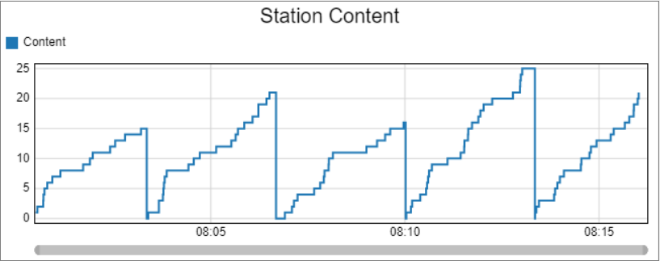
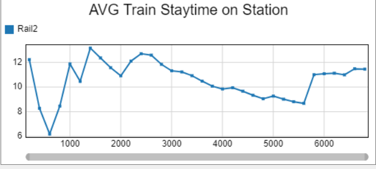
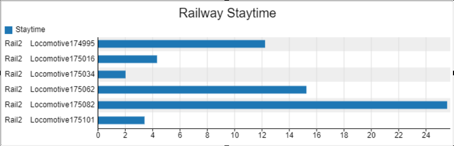
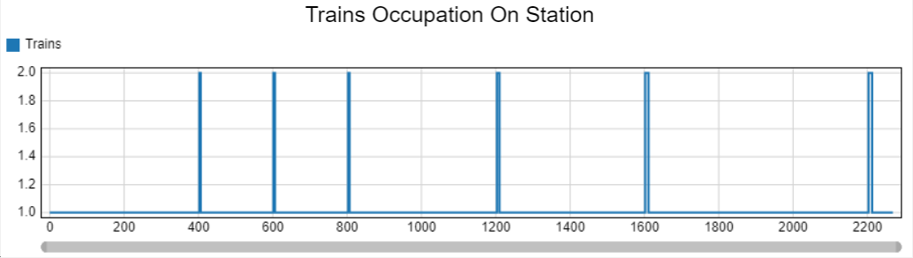
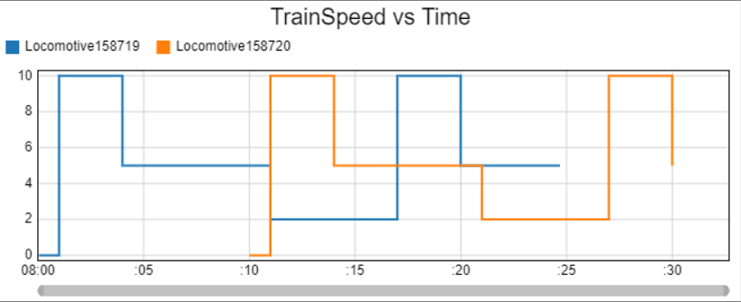

RailWorks comes with five custom Dashboards to get data from the model and display it in a more easily visual way. The current Dashboards that are in the module are:
This section shows all the Dashboards that RailWorks come with, populated with data to help visualize the purpose with which one.

Target Object: StationThis dashboard shows the current content value of the Station by the model runtime.

Target Object: StationThis dashboard shows the average time spent by locomotives inside rails connected to the Station.

Target Object: RailThis dashboard shows the time spent by each Locomotive on the selected Rail.

Target Object: StationThis dashboard shows the amount of Locomotives parked at the selected Station by the model runtime.

Target Object: RailsThis dashboard shows each locomotive's speed by the time that they pass through each selected Rail object.